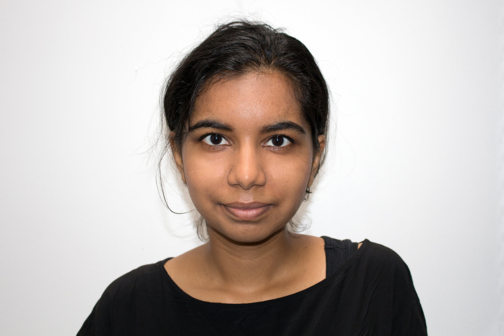

I explore the domains of Fine Art, Design, and Environments in order to better relate it to my personal work. Art focuses on the formal aesthetics of a work. Design deconstructs the form and function of an artifact. Environments examines physical structures and the resulting spaces. Each influences the other and thus informs my work.
